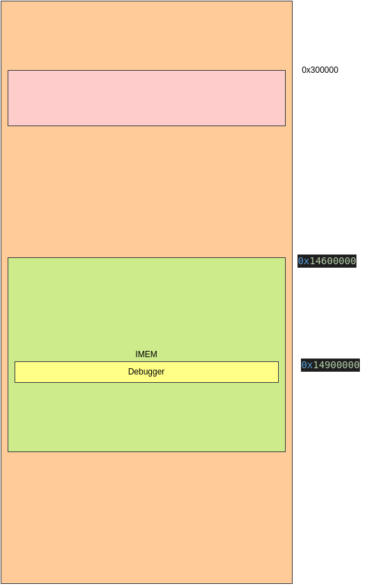

Pixel 3/XL
Quick reference docs for the Pixel 3XL. I highly recommend looking at the docs and code inside the workshop for this device.
Setup
From the root of the ghidra assistant source directory, navigate to remote_devices and clone the repository:
$ git clone ssh://git@bitbucket.dev.holmes.nl:7999/farmex/pixel3xl_ga_code.git
This repository contains a N-day for running the debugger on the device. To run it you must specify the location of the debugger:
$ ./exploit prepare_ga ../../utils/debugger/remote_shellcode/bin/pixel3/debugger.bin
Change the last argument with the path to the debugger.
To boot the phone into EDL mode, do the following:
Connect the Pixel 3XL to your computer using a USB cable
press and hold the EDL button
press the reset button and release it
After a ~2 seconds, release the EDL button. A new device(Bus 001 Device 040: ID 05c6:9008 Qualcomm, Inc. Gobi Wireless Modem (QDL mode)) should show up on your computer.
You well get something like the following as output:
$ ./exploit prepare_ga ../../utils/debugger/remote_shellcode/bin/pixel3/debugger.bin
[i] attached
[+] Ghidra Assistant loaded!
Traceback (most recent call last):
File "/home/eljakim/Work/ghidra_assistent/remote_devices/pixel3xl_ga_code/sdm845.py", line 789, in <module>
File "/home/eljakim/Work/ghidra_assistent/remote_devices/pixel3xl_ga_code/sdm845.py", line 781, in load_ga
File "/home/eljakim/Work/ghidra_assistent/remote_devices/pixel3xl_ga_code/sdm845.py", line 684, in prepare_ga
File "/home/eljakim/Work/ghidra_assistent/remote_devices/pixel3xl_ga_code/sdm845.py", line 460, in stage123
NameError: name 'exit' is not defined
The error in the end can be ignored.
Next, you can run the GA with the debugger option. It is recommended that you use the following entry in .vscode/launch.json, for easy debugging:
{
"name": "Run on Pixel3/XL",
"type": "python",
"request": "launch",
"program": "concrete_device.py",
"console": "integratedTerminal",
"justMyCode": true,
"args": ["remote_devices/pixel3xl_ga_code/GA_debugger.py"]
},
Memory Layout
